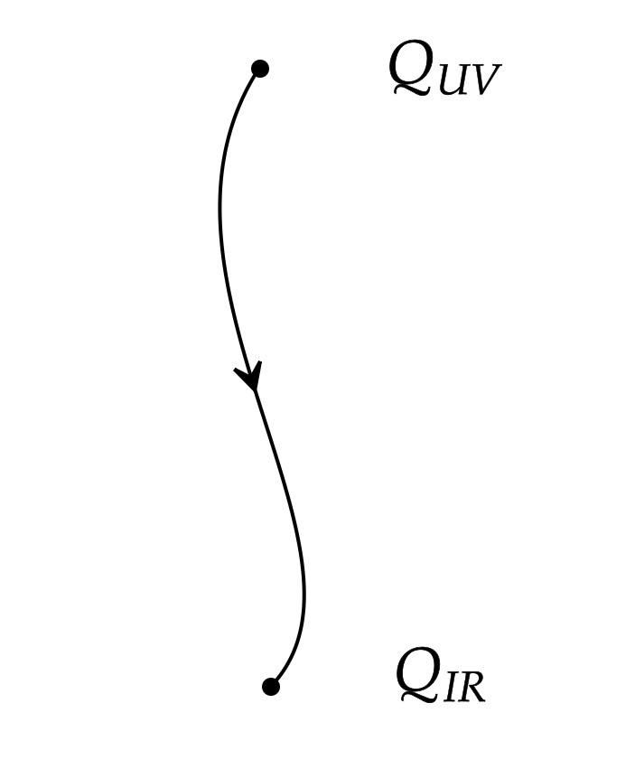
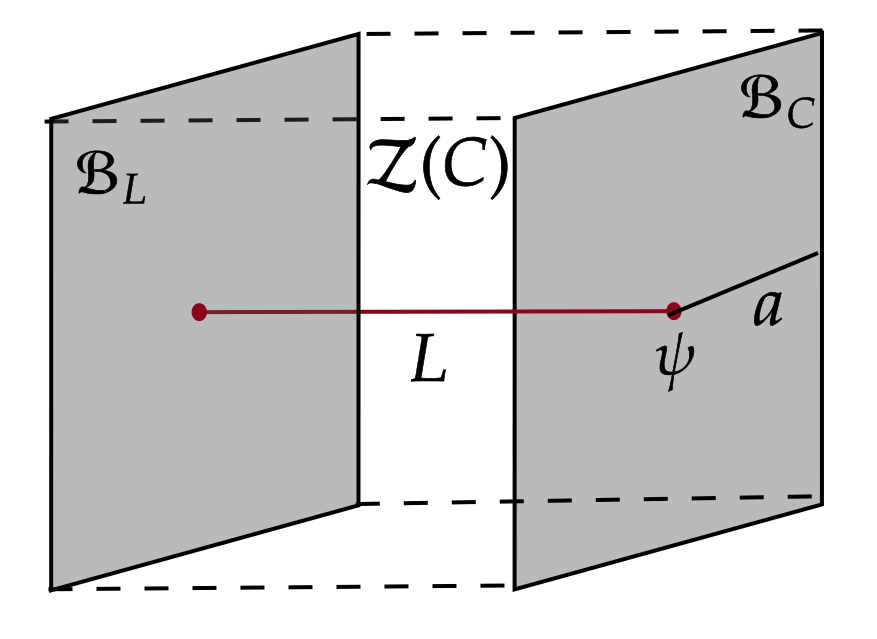
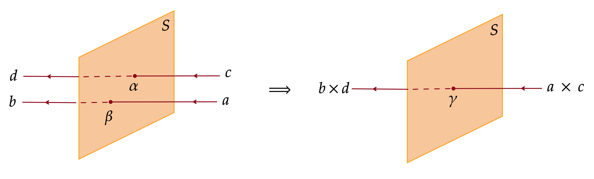
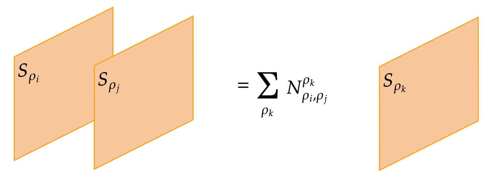

Like ordinary symmetries, non-invertible symmetries can have ’t Hooft anomalies. In general, these anomalies put additional constraints on RG flows beyond those imposed by ordinary symmetries. In this work with Mahesh Balasubramanian and Matthew Buican, we study a generalisation of ’t Hooft anomaly matching for non-invertible 1-form symmetries in 2+1d. We focus on symmetries implemented by topological line operators with real spins. These symmetries and their anomalies can be explicitly classified. Our classification implies that if a topological phase with a low-energy TQFT description contains anyons with non-invertible fusion rules, then it must contain anyons with complex spins. We study various RG flows preserving non-invertible 1-form symmetries to illustrate the generalized anomaly matching condition.

Anomalies of non-invertible symmetries in a 1+1d QFT are captured by gapped boundaries of a 2+1d TQFT called the SymTFT. In this work, along with Pavel Putrov, we find the explicit map between non-anomalous symmetries in 1+1d and gapped boundaries of the SymTFT. This relation provides a new method to classify non-anomalous line operators in 1+1d from the bulk SymTFT. Moreover, we show that a non-invertible symmetry \( \mathcal{C} \) admits a trivially gapped phase if and only if the SymTFT \( \mathcal{Z}(\mathcal{C}) \) admits a magnetic Lagrangian algebra.

Classification of non-invertible symmetries in \( d \geq 3\) dimensions is an active area of research. In this paper with Matthew Buican, we show that a 2+1d TQFT admits a no-invertible surface operator if and only if it contains bosonic line operators. We relate this proof to higher-gauging by determining a crtierion for a condensation defect to be invertible. We also comment on the applications to classification of non-invertible symmetries in 2+1d QFTs.

Extended operators play a crucial role in determining the gauge group of a QFT. For example, in a gauge theory with Lie algebra \( su(2) \), the global structure of the gauge group can be \( SU(2) \) or \( SO(3) \). This is determined by the charges of Wilson, 't Hooft and dyonic lines in the theory [1]. In a finite gauge theory, the fusion rules of Wilson lines alone cannot be used to determine the full gauge group. In [2], I explore the fusion rules of topological surface operators in a 2+1d gauge theory. I show that, in general, fusion rules of surface operators contain information about the gauge group not contained in the fusion rules of Wilson lines, and vice-versa.
PhD Thesis: Algebraic Structure of Topological and Conformal Field Theories
Master's Thesis: Aspects of Topological Quantum Field Theory